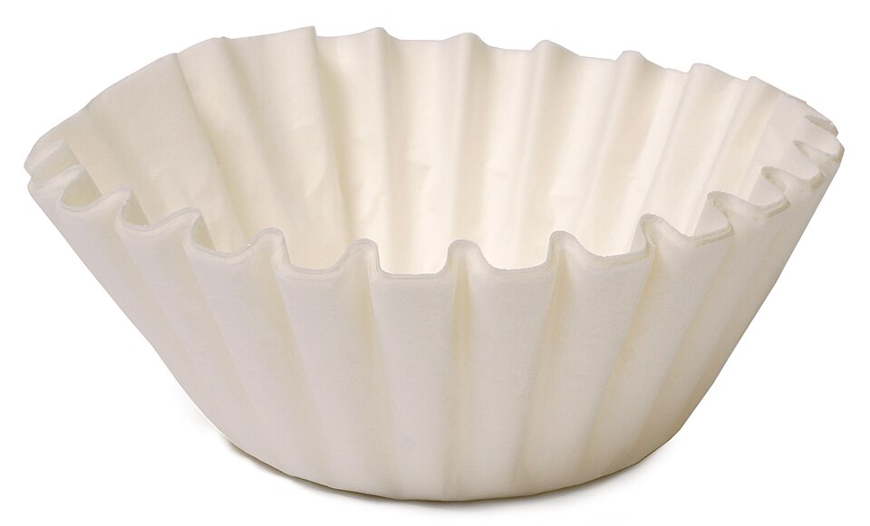

1910 · Fannie Merritt Farmer · BEVERAGES
Filtered Coffee
The Boston Cooking-School Cook Book


Historical Recipe
The following text is extracted from the 1910 edition, retaining historical terminology and quantities.
Original Ingredients & Directions
( French or Percolated )
1 cup coffee (finely ground)
6 cups boiling water
Various kinds of coffee pots are on the market for making filtered coffee. They all contain a strainer to hold coffee without allowing grounds to mix with infusion. Some have additional vessel to hold boiling water, upon which coffee-pot may rest.
Place coffee in strainer, strainer in coffee-pot, and pot on the range. Add gradually boiling water, and allow it to filter. Cover between additions of water. If desired stronger, re-filter. Serve at once with cut sugar and cream.
Put sugar and cream in cup before hot coffee. There will be perceptible difference if cream is added last. If cream is not obtainable, scalded milk may be substituted, or part milk and part cream may be used, if a diluted cup of coffee is desired.
Automatically extracted transcription; editorial verification pending. Historical instructions may not meet modern food-safety standards.